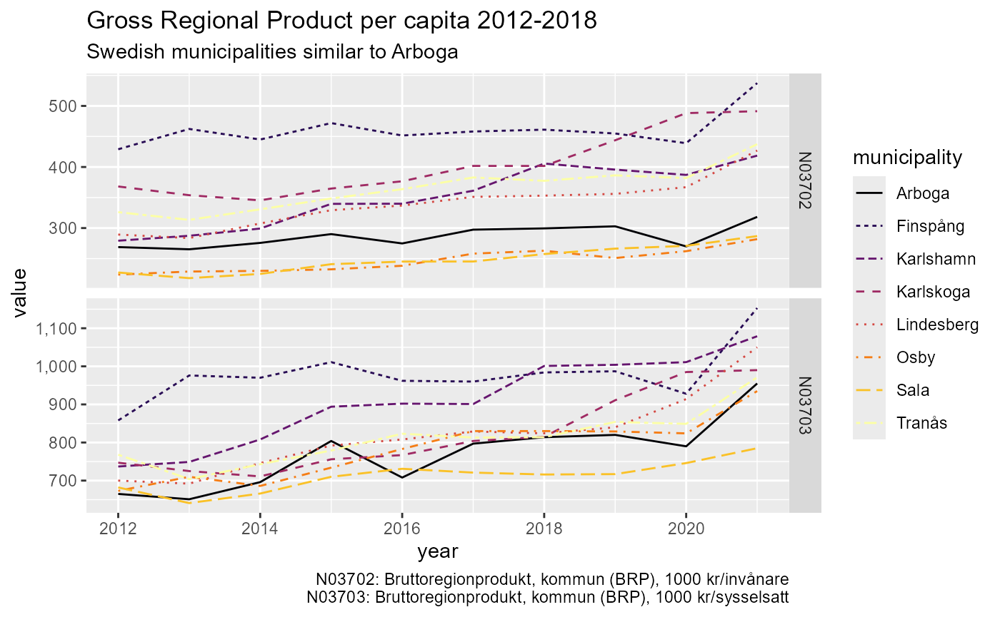

rKolada is an R package for downloading,
inspecting and processing data from Kolada, a Key Performance Indicator
database for Swedish municipalities and regions. This vignette provides
an overview of the methods included in the rKolada package
and the design principles of the package API. To learn more about the
specifics of functions and to see a full list of the functions included,
please see the Reference
section of the package homepage or run ??rKolada. For a
quick introduction to the package see the vignette A quick start guide to rKolada.
Important: All metadata and data labels in Kolada are in Swedish only. Function names and parameters are in English, but KPI titles, municipality names, and descriptions will be in Swedish.
The design of rKolada functions is inspired by the
design and functionality provided by several packages in the
tidyverse family. rKolada uses the base R pipe
(|>) throughout. Some vignette examples use
dplyr, tidyr, and ggplot2 for
data wrangling and visualisation:
install.packages("rKolada")Kolada, a Key Performance Indicator database for Swedish municipalities and regions
The Swedish Municipalities and Regions Database Kolada is a openly accessible,
comprehensive database containing over 4,000 Key Performance Indicators
(KPIs) for a vast number of aspects of municipal and regional
organisations, politics and economic life. The rKolada R
package provides an interface to R users to directly download, explore,
and simplify metadata and data from Kolada.
To get started with Kolada you might want to visit its homepage
(Swedish-only) or read through the Kolada API Swagger
documentation (English-only). However, you can also use the
rKolada package to explore data without prior knowledge of
the database.
The data model
Data in Kolada are stored along three basic dimensions:
- A KPI ID
- A point in time (year)
- A municipality/region ID
When downloading data, the user needs to specify search parameters for at least two of these three basic dimensions. (The Kolada API documentation also specifies a fourth basic dimension: gender. However, data for all genders is always automatically downloaded when available.) The parameters can be a single, atomic value or a vector of values.
Also, the Kolada database proves useful groupings of municipalities and KPIs that can be used for further exploration, or to create unweighted averages.
Lastly, some KPIs are also available for Organizational units (OUs) within municipalities, e.g. a school, an administrative subdivision or an elderly home.
Downloading data
If the user already has knowledge of the IDs of the KPIs and/or
municipalities they want to download, this can be done using the
function get_values(). For instance, if you want to
download all values for the KPI N00945 (“Tillfälliga
föräldrapenningdagar (VAB) som tas ut av män, andel av antal dagar (%)”)
for Sweden’s three most populous cities; Stockholm (id
"0180"), Gothenburg (Swedish: Göteborg;
"1480") and Malmö ("1280") between the years
2000 and 2020:
n00945 <- get_values(
kpi = "N00945",
municipality = c("0180", "1480", "1280"),
period = 2000:2020
)
head(n00945)#> # A tibble: 6 × 9
#> gender count status value kpi year municipality_id municipality
#> <chr> <int> <chr> <dbl> <chr> <int> <chr> <chr>
#> 1 T 1 "" 31.3 N00945 2000 0180 Stockholm
#> 2 T 1 "" 28.4 N00945 2000 1280 Malmö
#> 3 T 1 "" 33.2 N00945 2000 1480 Göteborg
#> 4 T 1 "" 31.9 N00945 2001 0180 Stockholm
#> 5 T 1 "" 29.1 N00945 2001 1280 Malmö
#> 6 T 1 "" 34.3 N00945 2001 1480 Göteborg
#> # ℹ 1 more variable: municipality_type <chr>The relevant data points are stored in the value column
of the resulting data.
In many cases, however, you will not know in advance exactly what KPIs to be looking for, or you might not know the IDs of Sweden’s municipalities.
Downloading metadata: get functions
Kolada has five different kinds of metadata entities Each one of
these can be downloaded by using rKolada’s get
functions. Each function returns a tibble with all
available data for the specified metadata entity:
- KPIs:
get_kpi() - KPI groups:
get_kpi_groups() - Municipalities:
get_municipality() - Municipality groups:
get_municipality_groups() - Organizational Unit: :
get_ou()
Each function returns a tibble with all available data
for the specified metadata entity.
#> # A tibble: 10 × 12
#> id title description is_divided_by_gender municipality_type auspice
#> <chr> <chr> <chr> <lgl> <chr> <chr>
#> 1 N00003 Personalko… Personalko… FALSE K E
#> 2 N00005 Utjämnings… Kommunalek… FALSE K X
#> 3 N00009 Intäkter k… Externa in… FALSE K NA
#> 4 N00011 Inkomstutj… Inkomstutj… FALSE K NA
#> 5 N00012 Kostnadsut… Kostnadsut… FALSE K NA
#> 6 N00014 Reglerings… Reglerings… FALSE K X
#> 7 N00016 Utjämnings… Utjämnings… FALSE K NA
#> 8 N00018 Införandeb… Införandeb… FALSE K X
#> 9 N00019 Strukturbi… Strukturbi… FALSE K X
#> 10 N00021 Intäkter e… Externa in… FALSE K NA
#> # ℹ 6 more variables: operating_area <chr>, perspective <chr>,
#> # prel_publication_date <chr>, publication_date <chr>, publ_period <chr>,
#> # has_ou_data <lgl>All get functions are thin wrappers around the more
general function get_metadata(). If you are familiar with
the terminology used in the Kolada API for accessing metadata you might
want to use this function instead.
Exploring metadata
For each metadata type mentioned in the previous sections,
rKolada offers several convenience functions to help
exploring and narrowing down metadata tables. (If you are familiar with
dplyr semantics, most of these functions are basically
wrappers around dplyr/tidyr code.)
Since each get function above returns a table for the
selected entity, a metadata table can be one of five different types.
All metadata convenience functions are prefixed to reflect which kind of
metadata table they operate on: kpi, kpi_grp,
municipality, municipality_grp, and
ou.
All metadata convenience functions have been designed with piping in mind, so their first argument is always a metadata tibble. Most of them also return a tibble of the same type.
The most important family of metadata convenience functions is the
search family. Much like dplyr::filter() they
can be used to search for one or several search terms in the entire
table or in a subset of named columns:
# Search for KPIs with the term "skola" in their description or title
kpi_filter <- kpi_df |> kpi_search("skola", column = c("description", "title"))
tibble::tibble(head(kpi_filter))
#> # A tibble: 6 × 12
#> id title description is_divided_by_gender municipality_type auspice
#> <chr> <chr> <chr> <lgl> <chr> <chr>
#> 1 N00022 Kostnadsutj… "Kostnadsu… FALSE K NA
#> 2 N00023 Kostnadsutj… "Kostnadsu… FALSE K NA
#> 3 N00026 Kostnadsutj… "Kostnadsu… FALSE K NA
#> 4 N00097 Nettokostna… "Avvikelse… FALSE K T
#> 5 N00100 Strukturkos… "Strukturk… FALSE K T
#> 6 N00108 Månadsavlön… "Antal ans… FALSE K E
#> # ℹ 6 more variables: operating_area <chr>, perspective <chr>,
#> # prel_publication_date <chr>, publication_date <chr>, publ_period <chr>,
#> # has_ou_data <lgl>
# Search for municipality groups containing the name "Arboga"
munic_g <- get_municipality_groups()
arboga_groups <- munic_g |> municipality_grp_search("Arboga")
arboga_groups#> # A tibble: 12 × 3
#> id title members
#> <chr> <chr> <list>
#> 1 G175909 Liknande kommuner ekonomiskt bistånd, Arboga, 2023 <df [7 × 2]>
#> 2 G176199 Liknande kommuner socioekonomi, Arboga, 2024 <df [7 × 2]>
#> 3 G176489 Liknande kommuner äldreomsorg, Arboga, 2024 <df [7 × 2]>
#> 4 G216099 Liknande kommuner arbetsmarknad, Arboga, 2024 <df [7 × 2]>
#> 5 G219042 Liknande kommuner räddningstjänst, Arboga, 2024 <df [7 × 2]>
#> 6 G35869 Liknande kommuner grundskola, Arboga, 2024 <df [7 × 2]>
#> 7 G36161 Liknande kommuner gymnasieskola, Arboga, 2024 <df [7 × 2]>
#> 8 G36453 Liknande kommuner IFO, Arboga, 2024 <df [7 × 2]>
#> 9 G37329 Liknande kommuner, övergripande, Arboga, 2025 <df [7 × 2]>
#> 10 G39502 Liknande kommuner LSS, Arboga, 2024 <df [7 × 2]>
#> 11 G85463 Liknande kommuner fritidshem, Arboga, 2024 <df [7 × 2]>
#> 12 G85755 Liknande kommuner förskola, Arboga, 2024 <df [7 × 2]>Another important family of exploration functions is the
describe family of functions. These functions take a
metadata table and print a human-readable summary of the most important
facts about each row in the table (up to a limit, specified by
max_n). By default, output is printed directly to the R
console. But by specifying format = "md" you can make the
describe functions create markdown-ready output which can
be added directly to a R markdown file by setting the chunk option
results='asis'. The output then looks as follows:
kpi_filter |> kpi_describe(max_n = 2, format = "md", heading_level = 4)N00022: Kostnadsutjämningsnetto förskola och skolbarnsomsorg, kr/inv 1 nov fg år
Description
Kostnadsutjämningsnetto förskola och skolbarnomsorg beräknas som kommunens standardkostnad minus standardkostnaden för riket i tkr dividerat med antal invånare totalt 1/11 nov fg år. Källa: SCB.
N00023: Kostnadsutjämningsnetto grundskola, kr/inv 1 nov fg år
Description
Kostnadsutjämningsnetto grundskola beräknas som kommunens standardkostnad minus standardkostnad för riket i tkr dividerat med antal invånare totalt 1/11 fg år. Källa: SCB.
Extra functions for exploring KPI metadata
KPI metadata is considerably more complex than other types of
metadata. To further assist in exploring KPI metadata the function
kpi_bind_keywords() can be used to tag data with keywords
(these are inferred from the KPI title) to classify KPIs and make them
more searchable.
# Add keywords to a KPI table
kpis_with_keywords <- kpi_filter |> kpi_bind_keywords(n = 4)
# count keywords
kpis_with_keywords |>
tidyr::pivot_longer(dplyr::starts_with("keyword"), values_to = "keyword") |>
dplyr::count(keyword, sort = TRUE)
#> # A tibble: 358 × 2
#> keyword n
#> <chr> <int>
#> 1 grundskola 147
#> 2 elever 143
#> 3 pedagogisk 109
#> 4 gymnasieskola 103
#> 5 gymnasieelever 98
#> 6 förskola 91
#> 7 åk 89
#> 8 personal 87
#> 9 kommunal 72
#> 10 år 68
#> # ℹ 348 more rowsSome KPIs can be very similar-looking and it can sometimes be hard to
discern which of the KPIs to use. To make sifting through data easier,
kpi_minimize() can be used to remove all redundant columns
from a KPI table. (In this case, “redundant” means “containing no
information that helps in differentiating KPIs from one another”,
i.e. columns containing only one single value for all observations in
the table):
# Top 10 rows of the table
kpi_filter |> dplyr::slice(1:10)
#> # A tibble: 10 × 12
#> id title description is_divided_by_gender municipality_type auspice
#> <chr> <chr> <chr> <lgl> <chr> <chr>
#> 1 N00022 Kostnadsut… "Kostnadsu… FALSE K NA
#> 2 N00023 Kostnadsut… "Kostnadsu… FALSE K NA
#> 3 N00026 Kostnadsut… "Kostnadsu… FALSE K NA
#> 4 N00097 Nettokostn… "Avvikelse… FALSE K T
#> 5 N00100 Strukturko… "Strukturk… FALSE K T
#> 6 N00108 Månadsavlö… "Antal ans… FALSE K E
#> 7 N00114 Årsarbetar… "Antal års… FALSE K E
#> 8 N00303 Tillgängli… "Kommunind… FALSE K T
#> 9 N00314 Tillgängli… "Kvinnors … FALSE K T
#> 10 N00325 Tillgängli… "Mäns Komm… FALSE K T
#> # ℹ 6 more variables: operating_area <chr>, perspective <chr>,
#> # prel_publication_date <chr>, publication_date <chr>, publ_period <chr>,
#> # has_ou_data <lgl>
# Top 10 rows of the table, with non-distinct data removed
kpi_filter |> dplyr::slice(1:10) |> kpi_minimize()
#> # A tibble: 10 × 9
#> id title description auspice operating_area perspective
#> <chr> <chr> <chr> <chr> <chr> <chr>
#> 1 N00022 Kostnadsutjämningsnett… "Kostnadsu… NA Kommunen, öve… Resurser
#> 2 N00023 Kostnadsutjämningsnett… "Kostnadsu… NA Kommunen, öve… Resurser
#> 3 N00026 Kostnadsutjämningsnett… "Kostnadsu… NA Kommunen, öve… Resurser
#> 4 N00097 Nettokostnadsavvikelse… "Avvikelse… T Kommunen, öve… Resurser
#> 5 N00100 Strukturkostnad kommun… "Strukturk… T Kommunen, öve… Resurser
#> 6 N00108 Månadsavlönad personal… "Antal ans… E Förskoleverks… Resurser
#> 7 N00114 Årsarbetare inom försk… "Antal års… E Förskoleverks… Resurser
#> 8 N00303 Tillgänglighet till tj… "Kommunind… T Kommunen, öve… Kvalitet o…
#> 9 N00314 Tillgänglighet till tj… "Kvinnors … T Kommunen, öve… Kvalitet o…
#> 10 N00325 Tillgänglighet till tj… "Mäns Komm… T Kommunen, öve… Kvalitet o…
#> # ℹ 3 more variables: prel_publication_date <chr>, publication_date <chr>,
#> # publ_period <chr>Note that kpi_minimize() operates on the current
table. This means that results may vary depending on the data
you’re operating on.
Metadata groups
Kolada provides pre-defined groups of KPIs and municipalities/regions. Exploring an using thse groups can facilitate meaningful comparisons between different entities or help paint a broader picture of developments in a certain field or area.
To get, search or describe
group metadata, use the same techniques as described above for regular
metadata (relevant prefixes are kpi_grp_ and
municipality_grp_).
A crucial difference between group metadata and other metadata
tables, however, is that group metadata comes in the form of a nested table.
Typically you might want to unnest the groups in a group
metadata table once yo hae found the relevant group(s) for your query.
To do this, use the unnest functions to create a table
containing unnested entities. For example, running
kpi_grp_unnest(kpi_grp_df) using a KPI group metadata table
as argument creates a kpi_df that can be further processed
using the kpi_ functions described in previous sections of
this vignette.
In other words: a group table has one row per group, with
members nested inside. unnest expands it so you get one row
per member, which you can then pipe into
kpi_search(), kpi_describe(), etc.
Downloading data using metadata
An alternative approach to downloading data using known IDs is to use
metadata tables to construct arguments to get_values().
rKolada provides a *_extract_ids() family of
functions for passing a metadata table as an argument to
get_values(). A typical workflow would be to download
metadata for (groups of) KPIs and/or municipalities, use functions like
kpi_search() to filter down the tables to a few rows, and
then call get_values() to fetch data.
As an example, let’s say we want to download all KPIs describing Gross Regional Product for all municipalities that are socioeconomically similar to Arboga, a small municipality in central Sweden:
# Get KPIs describing Gross Regional Product of municipalities
kpi_filter <- get_kpi() |>
kpi_search("bruttoregionprodukt") |>
kpi_search("K", column = "municipality_type")
# Creates a table with two rows
# Get a suitable group of municipalities
munic_grp_filter <- get_municipality_groups() |>
municipality_grp_search("Liknande kommuner socioekonomi, Arboga")
# Creates a table with one group of 7 municipalities
# Also include Arboga itself
arboga <- get_municipality() |> municipality_search("Arboga")
# Get data
grp_data <- get_values(
kpi = kpi_extract_ids(kpi_filter),
municipality = c(
municipality_grp_extract_ids(munic_grp_filter),
municipality_extract_ids(arboga)
)
)To explore results we can plot the resulting data using ggplot2 and add legends to keep track of what data we are visualizing:
# Visualize results
library("ggplot2")
ggplot(grp_data, aes(year, value, color = municipality)) +
# One line per municipality; linetype adds distinction in B/W print
geom_line(aes(linetype = municipality)) +
# Separate panel per KPI; free y-scales since units differ
facet_grid(kpi ~ ., scales = "free") +
labs(
title = "Gross Regional Product per capita 2012-2018",
subtitle = "Swedish municipalities similar to Arboga",
caption = values_legend(grp_data, kpi_filter) # Auto-generated legend
) +
# Colour-blind-friendly palette
scale_color_viridis_d(option = "B") +
scale_y_continuous(labels = scales::comma)
More on ggplot2? See https://ggplot2-book.org/.
Related packages
If you work with data from PX-Web APIs (Statistics Sweden, Statistics Norway, Statistics Finland, etc.), see pixieweb — a sibling package that follows the same design principles as rKolada.